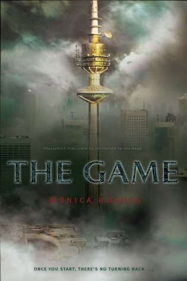

What This Book Is About:
Lisse and her friends graduate from the goverment school they are now getting
escorted to their DA(Designated Area). Once they make it there they explore
the area where they are about to live. They got an invitation for a game and they
wanted to know what it's about. They start exploring for information about the
game they find some information on it but in the end they just go where the game
is being hosted. They make it to Barton Oaks they find about what the game is and
then they sit on these recliners which teleports them to the game which is just
a virtual reality about a planet. They start going there alot and soon they need
help from some of her friends and soon they come out of nowhere.That's when they
went to the game again but this time they actually ended up on the planet they
were not in virtual reality and they ended up there for the rest of their lives.
Characters : Lisse, Karen, Benta, Brad, Scylla, Charlie, Alden, Trent, Katie, Paul
, Rich
What my theory of the game is: My theory of the game is that the reason they were first put in virtual reality of the planet is because they were being tested of they could actually survive there.The reason I think her freinds arrived out of no where is because they knew they needed help from them really badly so they brought them to there house to help them survive on the planet.When they thought they were ready that's when they ended up in the planet